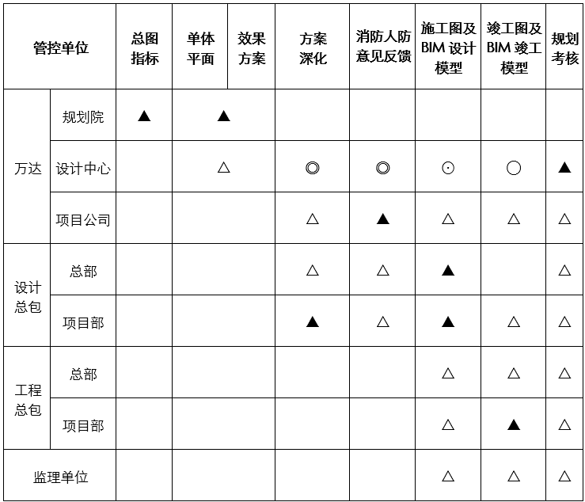
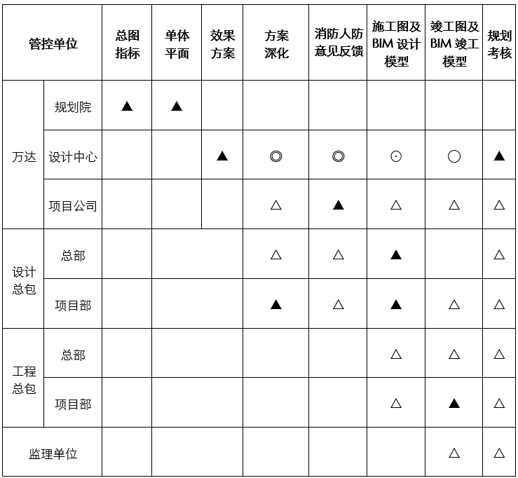
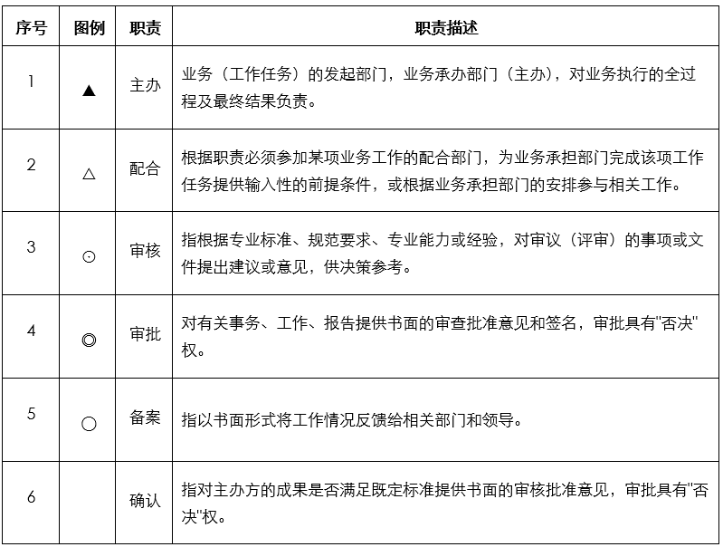

BIM总发包设计管理体系由万达、设计总包、工程总包、监理单位组成。
万达负责产品研发及项目整体协调；设计总包负责对项目全专业的方案设计、施工图及BIM模型设计、现场实施品质进行全面设计管控；工程总包负责项目现场施工过程的设计执行；监理单位负责对工程建设过程进行监督管理。
设计管理职责界面
| 参建单位 | 主要职责 |
| 万达 |
1.负责确定项目类型和方案成果移交。 2.负责BIM标准模型、标准族库的更新、完善。 3.负责确定设计总包单位。 4.负责与市政、规划等主管部门对接，落实各项市政条件，完成设计报批报建。 5.负责项目整体设计管控和项目参与各方的综合协调。 6.负责对设计总包、工程总包单位的设计考核以及项目整体规划考核。 |
| 设计总包 |
1.负责全部专业的方案深化、施工图及BIM模型设计，全面负责项目设计工作的质量、品质、计划、成本、安全等，对项目设计负全部责任。 2.根据第三方审核单位要求完成设计成果审核、修改。 3.根据招商调改的要求完成设计变更图纸及模型的修改。 4.负责工艺、设备深化设计审核、竣工图及竣工模型的审核。 5.负责设计分包单位确定，对各设计分包进行管理协调。 6.配合万达进行设计现场检查。 7.配合万达完成市政条件调研和报批报建。 8.配合万达完成规划考核。 9.负责对设计分包单位进行考核。 |
| 工程总包 |
1.负责按照施工图和BIM模型完成工程组织、施工和管理工作，落实设计意图和设计效果。 2.负责组织完成工艺、设备深化设计图以及竣工图、竣工模型。 3.配合落实设计变更，配合完成规划考核。 |
| 监理单位 |
1.负责项目工程建设的监督管理工作。 2.配合完成施工图及BIM模型、竣工图及竣工模型审核。 3.配合完成设计现场检查以及规划考核工作。 |
全标、类标项目设计管控权责界面表

非标项目设计管控权责界面表

权责界面图例说明:
